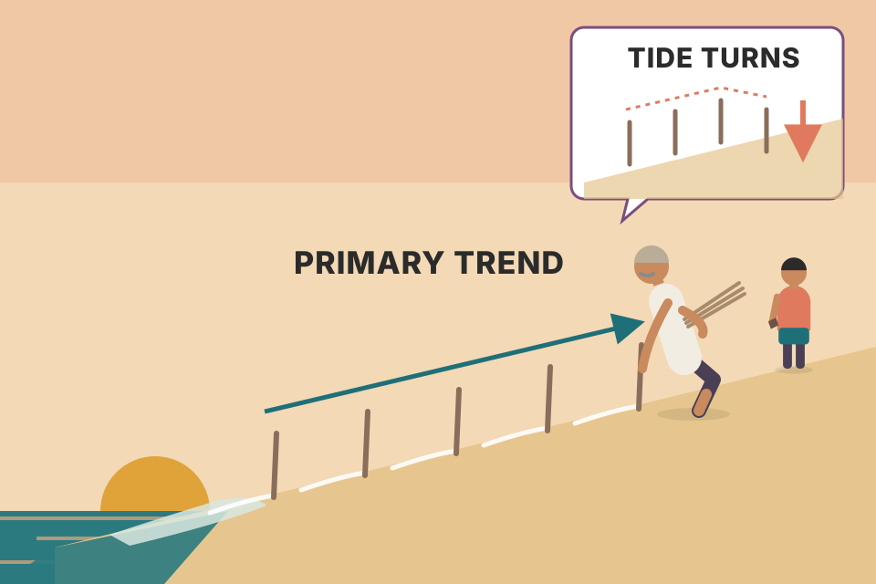
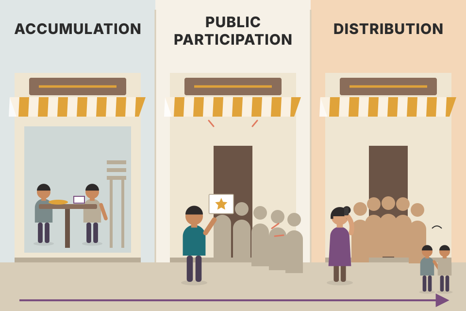
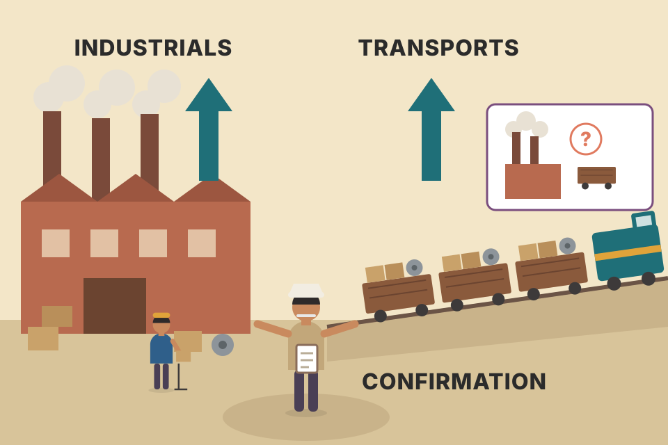
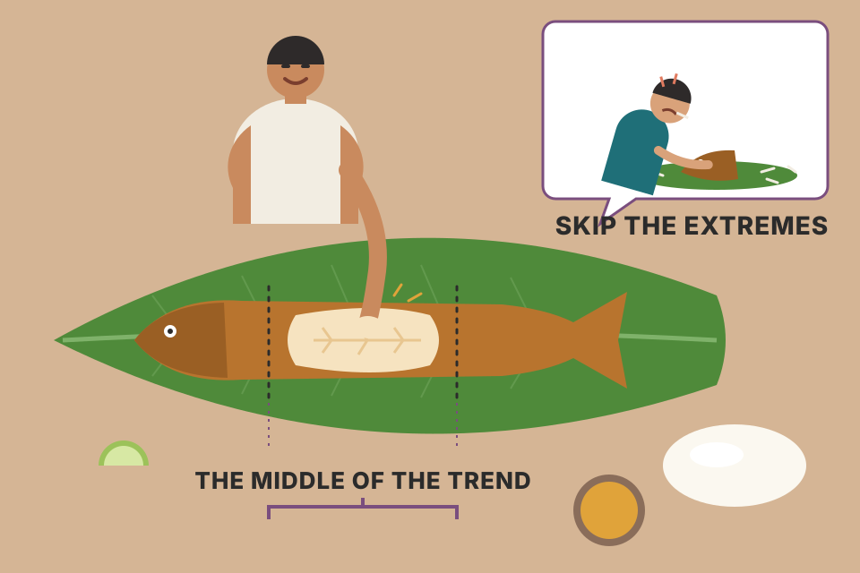

Almost every idea later in the book (what a trend is, the three sizes of trend, confirmation, volume, retracements) starts here, in a set of newspaper editorials written over a hundred years ago. This page walks through Dow's six tenets one at a time, with a live chart for each. All charts use simulated prices, not real market data.
Dow Theory is six rules about how a stock average behaves. Rules 1–3 describe the market; rules 4–6 tell you when to believe a signal. The rest of the chapter covers how Dow read his charts, what critics say, and how it all carries over to futures.
Charles Dow and his partner Edward Jones founded Dow Jones & Company in 1882. Most technicians agree that much of today's technical analysis grows out of ideas Dow published around the turn of the century, in editorials he wrote for the Wall Street Journal. Murphy says Dow Theory is still the cornerstone of the field, despite modern computers and newer indicators, and most technicians use Dow's ideas whether or not they know where they came from.
| Year | What happened |
|---|---|
| 1882 | Dow and Jones found Dow Jones & Company. |
| 3 Jul 1884 | Dow publishes the first stock market average: the closing prices of 11 stocks (9 railroads, 2 manufacturing firms). He felt they showed the economic health of the country. |
| 1897 | Dow splits it into two averages: a 12-stock industrial index and a 20-stock rail index. |
| 1902–1903 | Dow dies (1902). In 1903 S.A. Nelson collects the editorials into The ABC of Stock Speculation and first uses the name "Dow's Theory". |
| 1922 | William Peter Hamilton, Dow's associate and successor at the Journal, organises the tenets in The Stock Market Barometer. |
| 1928 | The industrial average reaches 30 stocks, the number it still had when Murphy wrote. |
| 1929 | The Journal's editors add a utility index (they updated the lists many times). |
| 1932 | Robert Rhea develops the theory further in Dow Theory (New York: Barron's). |
| 1978 | Richard Russell, in the introduction to a 1978 reprint of Nelson's book, compares Dow's contribution to stock market theory with Freud's to psychiatry. |
| 1984 | The 100th anniversary of the first average. The Market Technicians Association (MTA) gives Dow Jones & Co. a Gorham silver bowl for Dow's lasting contribution to investment analysis. The MTA called his index the forerunner of today's leading barometer of stock market activity, and still a vital tool for technicians 80 years after his death. |
Dow never wrote a book; everything we know comes from those editorials and from the people above who organised them. He applied his ideas to the two averages he created, the Industrials and the Rails, but Murphy says most of them work for any market average. The chapter lays out six basic tenets and how they fit into a modern study of technical analysis; the chapters that follow work out what they lead to.
One stock is one voice in a noisy room: it shouts about its own news (a strike, a new contract, a lawsuit). Average eleven voices and the private shouting cancels out; what's left is the hum they all share, which is the state of business. That shared hum is what Dow was trying to hear.
Murphy says why Dow built the average (he felt the eleven stocks showed the country's economic health), not how averaging works. Here is the mechanism. In this simulation each stock's daily move = (its sensitivity × a hidden common factor) + its own random news. The common part is shared, so it survives averaging. The stock-specific parts are independent, so they partly cancel: the variance of their average falls roughly as 1/N. With 1 stock, most of the daily wiggle is company noise; with 11 (Dow's 1884 count) the average already tracks the common factor closely; going from 11 to 30 adds less. Slide N and watch the correlation in the readout climb and then flatten.
The original Dow average was a plain arithmetic mean of closing prices (general knowledge; Murphy only says it was made of the closing prices of eleven stocks). With made-up closes whose sum is 1,320, the average is 1,320 ÷ 11 = 120. If one railroad jumps by 11 points on its own news and nothing else moves, the average rises by only 11 ÷ 11 = 1 point. If business improves and all eleven rise by 1 point, the average also rises 1 point. One stock's big story and a small shared move look the same size in the average, which is why you need a pattern of moves (the next tenets), not one day, before reading it as the economy speaking.
Murphy quotes Hamilton (pp. 40–41 of his book). In short: the combined buying and selling on the Stock Exchange already contains everything Wall Street knows, past and future. So there is no need to pile extra statistics on top of the averages (commodity price indexes, bank clearings, exchange-rate moves, trade volumes); the market has already weighed them.
This is the first premise of Chapter 1 again. It applies to averages and to single markets, and Murphy says it even allows for acts of God. The market can't foresee an earthquake or another natural disaster, but it absorbs the news almost instantly.
A crowded auction room. The moment someone whispers that the painting has a crack, every bidder lowers their price at once. Nobody needs to read the restorer's report; the price has already changed.
In this simulation the surprise knocks the "fair" level down on the dashed day, and traders close the gap between price and fair level exponentially: each day a fixed share of what's left. The time constant sets that share; at 1.2 days, about 57% of the repricing is done by the first close. After that, the chart simply carries on from the new level. You can't predict the surprise itself; Dow's point is only that once it happens, the average reflects it quickly, so the average is the best single summary of everything known.
Why it matters in practice beyond the book: push the time constant to 10+ days. Now the price drifts down for weeks after the news, and anyone who sold on the news headline would profit from the slow part. In a crowded market many traders chase exactly that profit, and their selling pulls the adjustment forward until little of it is left. That's the mechanism behind "the market already knows": not magic foresight, but competition that removes slow reactions. So a technician reads the price, which has already priced the news, instead of the news.
Take an average at 1,000 and a 12% surprise: the new fair level is 1,000 × (1 − 0.12) = 880, a 120-point gap. With a 1.2-day time constant the share done after d days is 1 − e−d/1.2: 57% after day 1 (close ≈ 932), 92% after day 3 (≈ 890), 98% after day 5 (≈ 882). The readout recomputes these numbers for your sliders. These speeds are the simulation's choice; Murphy only says the absorption is almost instant.
What is a trend? Dow's definition: in an uptrend each rally closes above the previous rally high, and each pullback low closes above the previous low. That is, rising peaks and rising troughs. A downtrend is the opposite: falling peaks and falling troughs. Murphy says this definition has stood the test of time and is still the cornerstone of trend analysis.
Dow believed action and reaction apply to markets as they do in physics. Murphy quotes him (Nelson, p. 43): often, after a stock tops, it falls back moderately, then rallies to near the high again; if it then falls away a second time, it is likely to drop a good distance.

You're standing on a beach. You can tell whether the tide is coming in by watching how far up the sand each wave reaches. If each wave reaches further inland than the last, the tide is coming in. When the high point of each wave starts to fall back, the tide has turned and is going out. Real tides last hours; Dow's market tides last a year or more.
The chart is built in three layers, about 504 trading days (≈ 2 years). The waves line is a zig-zag: rallies of 6–13 weeks, then corrections of 3–11 weeks, each giving back roughly the percentage on the slider (with some randomness). The ripples add a 9-day wiggle plus noise on top. The amber circles are wave peaks and the teal circles are troughs. Each one is higher than the one before, which is Dow's definition of an uptrend. Turn off the ripples and the structure is obvious; turn them on and it's what you actually see on a chart. Reading the waves through the ripples is the skill.
The swing window is the zoom knob. Whether a wiggle counts as a "peak" depends on how many days you compare it with. The second readout finds swing points on the price line (a day higher than the N days on each side) and counts the lower highs and lower lows (red dots). With a 2–3 day window you are reading the ripples, and they really do turn down inside every correction, so red dots appear even though the tide is up. Widen the window to about 15–25 days and you are reading the waves: the red dots thin out or vanish (how many are left depends on the market you rolled). Same price, same definition; the window decides which of Dow's three trends you're measuring. A 3-day window matches "minor" (under 3 weeks); 15+ days each side spans the 3-week-plus swings Dow called secondary.
A rally runs from 100 to 160 (a 60-point move). Dow's band for the pullback: one-third back = 160 − 20 = 140; half = 160 − 30 = 130; two-thirds = 160 − 40 = 120. Say the pullback stops at 132 after 6 weeks: it gave back (160 − 132) ÷ 60 = 47%, inside the band and near the usual half, and 6 weeks sits inside the 3-week to 3-month window. Normal secondary correction; the primary uptrend is intact. Try your own numbers:
For a programmer, Dow's definition is a comparison of the last two confirmed swing highs and the last two confirmed swing lows. "Mixed" is the important third state: one half has flipped and the other hasn't, which is exactly the argument in tenet 6 (section 07).
A swing point is only "confirmed" N days after it forms (you need N later days to know it was the high). That built-in delay is one reason every Dow-style signal is late (section 09).
tori_trendlines_explained.md: Tori's first step is exactly this. Read the main trend from market structure (higher highs + higher lows = uptrend) on monthly, then weekly, then daily charts.backtest_results_summary.md: the 200-day market filter (a way of reading the "tide") was the one consistent winner, +0.26 Sharpe and −8 points of drawdown out-of-sample on average.Dow focused on the primary trend, which he felt usually unfolds in three phases:

A new restaurant. First, a few food critics quietly book tables while it's empty (accumulation). Then the reviews come out and the queue goes round the block (public participation). Finally, everyone's cousin is talking about it and the early regulars have moved on to the next place (distribution).
The phases are about who is buying and how they feel, so price and volume look different in each. In this simulation: accumulation is quiet and flat with light volume; public participation is the steep, steady climb; distribution goes sideways on heavy volume while ownership changes hands from the early, informed buyers to the late crowd. The shading is drawn from the simulation's own phase labels. On a real chart nobody hands you those labels; you only recognise the phases clearly afterwards.
Where a trend-follower gets in. The green triangle is the Dow-style buy from section 09 (first close above the last swing peak, here a close higher than the 10 days on each side, after a down signal) whose trade is still open in the middle of the public-participation phase, i.e. the trade that rides this bull market. The readout says which phase it fired in, how much of the bottom-to-top rise was already done, and how many earlier buys after the low were stopped out first. In this toy market the accumulation phase is a flat range, so the buy fires either late in phase 1 or as price leaves the range at the start of phase 2; the readout's pooled count (200 runs, seeds 1–200) shows the split. The toy can't tell you how far into a real move that is; for real markets Murphy's figure is that Dow signals miss 20–25% of a move (section 09).
Phases are a who-is-trading story, so you read them from evidence of crowd behaviour, not from price alone: in the first phase, price stops falling on bad news and volume is light; in the second, breakouts and rising volume on up days (tenet 5); in the third, the bullish headlines and heavy volume Murphy describes, with price no longer making much progress. The practical use is humility about timing: a trend-follower deliberately buys in phase 2 and accepts that the phase-1 buyers got a better price.
Murphy gives no numbers for the phases, so here is an invented bull market, measured from the bear-market low of 100 to the top at 200 (a 100-point move). Accumulation: 4 months of sideways trade between 100 and 112 on light volume; the 12 points here are 12% of the whole move. Public participation: price breaks out and climbs to about 185 over a year (73% of the move). Distribution: 3 months between 185 and 200 on heavy volume (the last 15%). Now the signals, using tenet 6 (section 07). The first close above the range top, about 113, is a higher high, but the last trough (100) was still a lower low, so the trend is only "mixed": the aggressive camp buys there, 13% into the move. Price runs to 125, dips to 115 (a higher low), then closes above 125 at about 126: now both peaks and troughs are rising, and the strict camp buys, 26% into the move. Both entries are in phase 2, as Murphy says, and the strict one lands near his 20–25% "missed" figure (section 09) only because these numbers were chosen that way.
Dow meant the Industrial and Rail averages: no important bull or bear signal counts unless both averages give the same signal. To confirm the start or continuation of a bull market, both must rise above a previous secondary peak (the top of an earlier intermediate rally, the "wave" size from section 03). The two signals don't have to happen on the same day, but the closer together they are, the stronger the confirmation. When the averages diverge (one breaks out, the other doesn't), Dow assumed the previous trend was still in force. (Murphy adds that Elliott Wave Theory needs a signal in only one average.)
Murphy's figures show the Dow Industrials and Dow Transports (the Transports are today's version of Dow's Rails; that link is general knowledge, not stated in the chapter). Figure 2.1 is a long-term view, early 1979 to early 1998: for a major bull trend to continue, both must advance together. Figure 2.2 zooms in on 1994 to early 1998: in early 1997 (point 1) the Transports confirmed an earlier breakout in the Industrials; the following May (point 2) the Industrials confirmed an earlier new high in the Transports.

Factories make goods, railways carry them. If factories say business is booming but the trains are running empty, someone is wrong. Dow wanted both stories to agree before believing either.
Both lines are simulated; the Transports are built from the Industrials with a delay plus their own random drift, so they mostly agree but sometimes don't. A circle marks the day an average closes past its last secondary peak or trough (a swing point with N lower days on each side). A triangle marks a confirmed signal: the second average has done the same within 40 days (the 40-day limit is my choice for the simulation; Dow set no fixed window, only that a shorter gap is a stronger confirmation). The readout gives the gap between the two. Push "loosely" up: the averages disagree more, so more breakouts go unconfirmed, and in those cases Dow would assume the old trend is still in place.
Why two witnesses help (the mechanism) beyond the book: a breakout can be caused by something real that both averages share (the business cycle) or by noise that belongs to one average alone. Noise in two different averages is partly independent, so it rarely pushes both across their peaks within a few weeks of each other. Requiring both is a filter: it removes many noise breakouts, at the cost of waiting for the slower average.
The Industrials' last secondary peak is 9,000; they close at 9,050 on day 212, a breakout. The Transports' last secondary peak is 3,400; they close at 3,420 on day 219. Gap = 7 days, so the bull signal is confirmed on day 219 (the later of the two). If the Transports had instead fallen back to 3,250 and never closed above 3,400, a Dow theorist would treat the Industrials' breakout as unconfirmed and assume the previous trend still holds. (Made-up numbers; Murphy's own examples are the two points on Fig 2.2.)
Pooled over 200 simulated pairs (seeds 1–200, not hand-picked) at the slider settings above. "One average" flips the trend on every Industrials breakout; "both" flips only when the other average does the same within 40 days. A quick reversal is a flip that is undone within 30 days.
Read the trade-off, not the size: in this simulation the Transports are built from the Industrials, so how much confirmation helps depends on the noise level you set. It is not evidence about real Dow averages.
Dow saw volume as a secondary but important factor. Simply put, volume should expand in the direction of the major trend. In an uptrend, volume rises as prices rise and shrinks as prices fall. In a downtrend, volume rises as prices drop and shrinks as they bounce. But Dow based his actual buy and sell signals entirely on closing prices; volume was only supporting evidence. Today's volume indicators help judge whether volume is rising or falling off, and traders compare that with price to see whether the two agree.
Volume is the crowd's enthusiasm. A rally on heavy volume is a march with a big band behind it. A rally on thin volume is a few people walking up the road; it can go on for a while, but nobody important has joined.
The readout averages volume on up days and on down days, separately for the uptrend and the downtrend stretch. "Confirming" means up-day volume beats down-day volume in the uptrend, and the reverse in the downtrend. In the warning scenario the price still makes new highs, but heavier volume shows up on the down days. The trend itself hasn't changed yet; volume is just the first thing that stops agreeing.
Over 50 days of an uptrend there are 30 up days averaging 1.35 million shares and 20 down days averaging 0.75 million. Ratio up ÷ down = 1.35 ÷ 0.75 = 1.8: buyers are pushing harder than sellers, volume confirms. Over the next 30 days price still edges to new highs, but up days average 0.8 million and down days 1.2 million: ratio 0.67. Price says "up", volume says "the push is now on the sell side". Dow would not sell on this (his signals come from closing prices), but he would treat the uptrend's evidence as weaker and watch the closes more closely. (Made-up numbers; the readout computes the same ratio on the simulated chart.)
The check in code: over a rolling window, compare average volume on up-close days with average volume on down-close days. It is a supporting filter, never the trigger, exactly as Dow used it.
Failure modes to know before trusting the ratio: (1) one-off volume spikes that have nothing to do with conviction, such as index rebalancing days, derivatives expiry days and block deals, can swing a 20-day average on their own; (2) holiday weeks are thin on both sides, so the ratio gets noisy; (3) for futures, volume moves from the expiring contract to the next one around rollover, so a single contract's volume falls even when interest in the market hasn't; (4) a strong trend can run for a long time on "weak" volume. That last one is why Dow kept volume secondary.
intraday_swing_playbook.md setup S-1 needs a daily close above the 50-day high on volume above 1.5× the 20-day average, and the ORB filter needs relative volume above 2: both are "volume must confirm" written as a rule.Murphy touched on this tenet in Chapter 1, and says it forms much of the foundation of modern trend-following. It borrows a physics rule: an object in motion (a trend) keeps moving until some outside force changes its direction. Tools that help spot a reversal include support and resistance, price patterns, trendlines and moving averages, and some indicators warn even earlier that momentum is fading. Even so, Murphy says, the odds usually favour the existing trend continuing.
The hardest job for a Dow theorist, or any trend-follower, is telling a normal secondary correction apart from the first leg of a new trend in the other direction. Dow theorists often disagree on exactly when a reversal signal happens. Step through the four cases:
A runner who has been winning every race. One slow lap (a correction) doesn't mean they're finished. If they can't even match their old best time (failure at C) and then lose to someone they used to beat (break of B), the decline is real. If they set a new record first (C above A) and only then stumble, opinions split: some say "decline", others wait to see a second bad race.
Everything rests on the definition from tenet 2. An uptrend is rising peaks and troughs, so it isn't over until that pattern breaks. In the failure swing both halves break (a lower peak at C, then a lower trough), so the signal at S needs no debate. In the nonfailure swing only the trough breaks at S1, so a strict reader waits for the peak half too (E below C) before calling it a downtrend. That's the trade-off: S1 is earlier but rests on half the evidence; S2 is later but has both.
About "much weaker": Murphy doesn't explain it. One reading (mine, not his): failing to make a new high at C shows strength already fading before B breaks. Don't build a rule on that sentence.
Failure swing: the average peaks at A = 1,000, pulls back to B = 950, rallies only to C = 985 (below A), then closes at 947. That close is below B with a lower peak already in place: sell at S ≈ 947. Both camps agree.
Nonfailure swing: A = 1,000, B = 950, but C = 1,020 (a new high). Price then closes at 948, below B: the aggressive camp sells at S1 ≈ 948. Price falls to D = 930, rallies to E = 990 (below C = 1,020, so now a lower high too) and closes at 927, below D: the strict camp sells at S2 ≈ 927. Waiting cost 21 points (about 2.2% of the S1 price). The other branch: if after D the rally had gone on above 1,020, the S1 seller would have had to buy back above 1,020, about 7.6% above where they sold, while the strict camp never left. (Made-up numbers.)
The chart above runs the two camps' rules on a simulated market of alternating up and down legs (each leg 50–139 days, drift 0.2–0.4% a day, 1.1% daily volatility). Swing points are N-day pivots on closes, used only once they're known (N days later). While the strict reading of the trend is up, every first close below the latest trough is a break: a failure swing if the latest peak is below the one before (filled red triangle, both camps sell), a nonfailure swing otherwise (outline triangle at S1). Each nonfailure break is then followed until either the strict camp sells (filled triangle at S2) or price closes back above C (amber circle: the trend resumed, so S1 was a whipsaw). Bottoms are the mirror image in green. The table pools the same test over 200 markets (seeds 1–200) for your swing window:
What this measures is the trade-off Murphy describes: S1 is earlier but sometimes wrong; S2 is later but more often right. The sizes come from the toy market's drift and volatility, so they say nothing about real markets and are not an edge.
Dow relied only on closing prices. An average had to close above a previous peak or below a previous trough to mean anything. He did not count a move that poked through during the day but closed back inside.
When traders talk about "lines" in the averages, they mean horizontal patterns: sideways trading ranges that usually act as corrective phases. They're normally called consolidations. Murphy says that today we might call them rectangles.
A football match. The ball hitting the crossbar during play doesn't count; only the final score does. Dow scores the day on the close.
Each bar shows the day's high, low, open (left tick) and close (right tick); Chapter 3 explains how to read them. Inside the shaded "line", one day's high pokes above the top of the range but the close stays inside. Tick the box to see the signal an intraday rule would give there, and how price then falls back into the range. Dow's close-only rule waits for the later bar that actually closes above. The close is where buyers and sellers agree to leave the price for the night, so it carries more information than a brief spike.
The highest close inside a line is 105.0. On Tuesday the average trades up to 106.3 during the day but closes at 104.6: under Dow's rule nothing has happened. On Thursday it closes at 105.4: that close is the signal. An intraday rule would have acted on Tuesday at about 105.0 or higher, two days earlier, and would then have been holding a position that closed back inside the range the same day. (Made-up numbers.)
200 simulated lines (seeds 1–200): an up-leg, a 50-day sideways range, then a leg that drifts up, flat or down at random (one-third each). Signal = first day after the line's highest close whose close (Dow) or intraday high (not Dow) is above that close. "Held" = the close 10 days later is still above the line's top.
The intraday rule fires more often and earlier, mostly on pokes inside the range, and far fewer of its signals hold. The close-only rule pays a higher entry price for that reliability. Exact numbers depend on how far the simulated bars poke above their closes.
tori_trendlines_explained.md: entries need a candle closing through the line, and the exit is a close below the stop line, "not just a wick". Same rule, 100 years later.Dow Theory has done well at spotting major bull and bear markets, but it's criticised for being late. On average it misses 20–25% of a move before it gives a signal, and many traders think that's too late. A Dow buy signal usually comes in the second phase of an uptrend, when price breaks above a previous intermediate peak. That's also roughly where most trend-following systems get in.
Murphy's answer: Dow never meant to anticipate trends. He wanted to recognise major bull and bear markets once they appear and capture the large middle portion of important moves. The record suggests it did that reasonably well: from 1920 to 1975, Dow Theory signals captured 68% of the moves in the Industrial and Transportation Averages and 67% of those in the S&P 500 (source: Barron's). Murphy says critics who blame it for missing exact tops and bottoms don't understand trend-following.

Eating a fish: you leave the head and the tail and eat the middle, which is where most of the meat is. Trying to get every last bite from the head and tail is slow, and you risk the bones.
The simulation uses one average and a simple Dow-style rule (not a full Dow theorist's judgement): buy on the first close above the last swing peak after a downtrend, sell on the first close below the last swing trough. Shaded = holding. For each trade the readout measures the swing from the lowest close before the buy to the highest close while holding: how much was missed before entry, how much was given back before exit, and how much was captured. Bigger swing settings wait for bigger peaks: fewer false signals, but more missed at both ends. These percentages come from this toy market, not from Murphy.
Murphy gives both numbers but doesn't connect them, and he doesn't say whether "68% of the moves" means 68% of each move's size or that 68% of the moves were caught. If it means size, this is one way they could fit (my arithmetic, not his): a bull move from 100 to 200 is 100 points. Missing 22% means buying at 122. If the sell signal comes 10 points below the top, at 190, the trade captured 190 − 122 = 68 points, i.e. 68% of the move, with 22% missed at the bottom and 10% given back at the top. If "68%" counts moves instead, the two numbers measure different things and needn't add up at all.
The same rule on 200 simulated markets of alternating up and down legs (seeds 1–200; each leg 50–139 days, drift 0.2–0.4% a day, 1.1% daily volatility), for several swing windows. Winning trades are split into missed / given back / captured shares of their swing; a whipsaw is a trade that captured nothing.
The pattern is the point: wider windows miss more at both ends; narrow windows get whipsawed more. The toy doesn't validate or refute Murphy's 20–25% and 68%, which come from real averages over 1920–1975; change the drift or volatility and these numbers move.
tori_trendlines_explained.md: "lines are drawn late (5-candle confirmation), so entries are not at the bottom". Any method that waits for a confirmed swing pays this same price.Dow apparently never meant his theory to forecast the stock market itself. He thought its real value was reading the stock market's direction as a barometer of general business conditions. Murphy says we can only marvel at Dow's vision: besides laying down much of today's price-forecasting method, he was among the first to see stock market averages as a leading economic indicator.
A weather barometer doesn't measure rain; it measures air pressure, which falls before the rain arrives. Dow read the stock average the same way: not as the economy itself, but as a reading that moves before the economy does.
Murphy doesn't explain why stocks lead; the usual explanation is that a share price is the market's estimate of a company's future profits. When investors start to expect better business months ahead, they bid prices up now, before the better sales and jobs show up in economic reports. So the average turns first and the economy follows. It is a lead, not a guarantee: the average can fall on fears that never come true.
A toy model. The "economy" is a slow business cycle (each cycle 40–72 months long, about 4½ years on average, varying at random) measured monthly. The "stock average" is the same cycle seen L months early (investors pricing the future), plus mood noise: slow swings of fear and greed that have nothing to do with business. Peaks are marked where a line is the highest point within 6 months either side. A stock peak "called" a business peak if the business peak came 0–18 months later; a stock peak with no business peak after it is a false alarm.
What to try. Set noise to 0: every stock peak lines up with a business peak, and the measured lead equals L. Raise the noise: the mood swings create extra stock peaks with no recession behind them (false alarms), and the peak-pair lead gets worse in two ways. It scatters more (the ± in the pooled readout), and it is pulled toward the middle of the 0–18-month window: a false-alarm peak can land anywhere in that window and get paired with the next business peak. In the pooled runs at noise 4, a built-in lead of 0 months reads as about 5, and a lead of 12 reads as about 9. The cross-correlation readout is how economists actually measure a lead: shift one series against the other month by month and see which shift lines them up best. In the pooled readout it stays close to L with a much smaller spread, because it uses every month rather than a handful of turning points. Lesson: a lead measured from a few turning points can be badly off even when the lead is real.
The model builds the lead in on purpose, so it can't show that stocks lead; it only shows what a noisy leading indicator looks like to someone using it. The second readout pools 200 simulated histories (seeds 1–200) at your settings.
Suppose over 30 years the stock average made 9 major peaks and business activity made 6. Six of the stock peaks came before a business peak, by 4, 7, 5, 9, 6 and 5 months: average lead (4+7+5+9+6+5) ÷ 6 = 6 months. The other 3 were false alarms: the average fell hard and business kept growing. So, as a recession warning, a stock peak was right 6 times out of 9 (67%) and gave about half a year's notice. That is the honest shape of Dow's barometer: useful, early, and sometimes wrong. (Made-up numbers. Economist Paul Samuelson made the same point with his well-known quip that the market had predicted nine of the last five recessions.)
Composite leading indexes, such as the US Conference Board's Leading Economic Index, include a stock price index as one input, alongside things like building permits and jobless claims. Combining several leading series is the same trick as Dow's averaging in section 01: each series has its own false alarms, and averaging them cuts the noise. For a trader the use runs the other way too: a bear market in the index is a reason to expect weaker business news ahead, not to wait for it.
Dow studied stock averages. Most of that work carries over to commodity futures, but Murphy says there are some important differences between stock and futures trading. The one he spells out: Dow assumed most investors follow the major trend and use intermediate corrections only for timing; he thought the minor trend didn't matter. In futures, most trend-followers trade the intermediate trend instead, so they must watch the minor swings closely for timing. If a futures trader expects an intermediate uptrend to last a couple of months, they look for short-term dips to buy. In an intermediate downtrend, they use minor bounces to sell short. So the minor trend becomes extremely important in futures.
Surfing. The intermediate trend is the wave you've chosen to ride; the minor dips are the moments you paddle in. You don't wait for next season's tide; you time your entry on the small swells.
Shading shows the intermediate direction, taken here from the slope of a 40-day average (an illustrative choice, not Murphy's rule). Circles mark minor swing lows during green stretches (dips to buy) and minor swing highs during red stretches (bounces to sell). A 2-day swing point is only known 2 days later, so in real time you'd act a little after each circle.
The setup drawn my rules, not Murphy's: Murphy gives the idea (buy minor dips in an intermediate uptrend, sell minor bounces in a downtrend) but no exact entry, stop or target. To make it testable the chart uses: entry at the close of the day the 2-day swing low (or high) is confirmed; stop 0.5% beyond that swing low (or high), on a closing basis; target twice the risk (2R); exit after 20 days if neither is hit. Step through the trades with the buttons; the selected trade's entry, stop and target are drawn as lines.
A futures contract is in an intermediate uptrend (40-day average rising). It dips to a 2-day swing-low close of 2,000, and two days later closes at 2,030, confirming the swing low. Entry 2,030. Stop 0.5% under the swing low: 2,000 × 0.995 = 1,990, so the risk is 40 points (1R). Target 2R = 2,030 + 80 = 2,110. A close at 2,110 or above wins +2R (80 points); a close at 1,990 or below loses −1R (40 points). With a 2:1 payoff, the trade breaks even over many tries if it wins just over one time in three. (Made-up numbers.)
Pooled over 200 simulated markets (seeds 1–200, alternating legs as in sections 07 and 09). Each dip/bounce trade is compared with a baseline: a random day in the same trend stretch, with the same risk in % and the same stop, target and 20-day rules.
Honest reading: in a simulated market whose only structure is trend drift plus random noise, both do about equally well, because the profit comes from the drift, not from the dip. In this toy the dip mainly gives you a natural place for the stop (just past the swing point). Whether real dips add an edge on top is a question for real data, not for this toy.
price_physics_basics.md explains why the weekly pullback worked: velocity (an uptrend via 50/200-week averages) plus a small spring move (a dip to the 20-week EMA) to enter cheaper. That's this idea one timeframe up. Your backtest_results_summary.md has it at 18.5–26%/yr, with all 8 parameter settings profitable out-of-sample.For its first 100 years the Dow Jones Industrial Average could only be used as a market indicator. That changed on October 6, 1997, when futures and options on it began trading:
Murphy's closing thought: Dow would probably be happy that, a century later, his averages can be traded and his theory actually put into practice.
Before 1997 the Dow was a thermometer: you could read it but not buy it. A futures contract or an index fund turns the reading into something with a price of its own, the way a weather bet turns a forecast into money.
Why an index product tracks the index. A fund like the Diamonds holds the actual 30 stocks in the same proportions as the average, so its value moves with the average by construction (minus small fees). The Dow is price-weighted: it's the sum of the 30 share prices divided by a divisor, so a high-priced stock moves it more than a low-priced one. To track it, a fund holds the same number of shares of each stock. The DJX options were set at 1/100 of the Dow (Dow 8,000 → DJX 80), and the Diamonds units were also priced at about 1/100 of the average.
Why a futures price sits near the index (cost of carry). Instead of buying the stocks today, you can buy the future and pay later. Buying the stocks costs interest on the money but earns the dividends; the future earns no dividends but ties up no money. So a fair futures price is the index plus the interest, minus the dividends, over the time left. If the future drifts far from that, traders buy the cheap side and sell the dear side (index arbitrage) until the gap closes. That arbitrage is what keeps the tradable thing glued to Dow's indicator.
An index at 8,000, interest at 5.5% a year, dividend yield 1.6%, 90 days to expiry. Net carry = 5.5 − 1.6 = 3.9% a year; for 90 days that's 3.9% × 90 ÷ 365 = 0.96%. Fair future ≈ 8,000 × 1.0096 = 8,077, a premium (basis) of about 77 points. If the future traded at 8,130, an arbitrageur would sell the future, buy the stocks, and lock in about 53 points less costs; their trades push the two back together. As expiry nears, the days shrink, the premium shrinks to zero, and on expiry the future settles to the index. (Made-up numbers; the calculator above repeats the arithmetic for your inputs. The same formula prices Nifty futures on the NSE, which is why a Nifty future usually trades a little above spot.)
index_funds.md: the same thing exists for Indian averages today. You can hold the Nifty 50 through an index mutual fund or an ETF on the exchange.Murphy calls the chapter a quick review of the most important parts of Dow Theory, and says understanding it gives a solid foundation for any study of technical analysis. Much of the rest of the book adapts Dow's ideas. Here's where each one comes back:
| Dow's idea (Murphy's list) | Where it returns (Murphy's pointers in this chapter; retracements are in Ch.4) |
|---|---|
| Standard definition of a trend (rising/falling peaks and troughs) | Chapter 4 |
| Three categories of trend; three phases | Chapter 4; phases ↔ Chapter 13 |
| Confirmation and divergence | Chapter 6 (as Murphy says on p64) |
| Interpretation of volume | Chapter 7 |
| Percentage retracements (⅓, ½, ⅔) | Chapter 4 |
For more, Murphy recommends the review of Dow Theory in Edwards & Magee, Technical Analysis of Stock Trends, alongside the sources already cited (Nelson, Hamilton, Rhea).
Net carry = 6 − 2 = 4% a year; for 73 days that is 4% × 73 ÷ 365 = 0.8%, so fair value ≈ 10,000 × 1.008 = 10,080. At 10,050 the future is 30 points cheap, so they buy the future and sell the stocks, and their trades push it back up toward 10,080. The premium shrinks to zero as expiry nears, because the days left go to zero. This is beyond the book: Murphy only reports that Dow futures and options began trading in 1997 (section 12).
Each rally closes above the previous rally high and each pullback low closes above the previous low: rising peaks and troughs (section 03).
A secondary (intermediate) trend: those last three weeks to three months and usually retrace one-third to two-thirds, most often about half. Perfectly normal (section 03).
Distribution: the news is better than ever, newspapers turn very bullish and public speculation rises (section 04).
No confirmed signal. When the averages diverge, he assumed the previous trend was still in force (section 05).
No. Volume was a secondary, confirming factor; his signals were based entirely on closing prices (sections 06 and 08).
Some at S1, the first break below B. Others wait for a lower high at E and a new low below D, then sell at S2 (section 07).
False-alarm stock peaks fall at random places, and the peak-pair method pairs each business peak with the latest stock peak in the 18 months before it. When that is a false alarm, the "lead" it gives is a random gap, not L, so the average slides toward the middle of the window (a lead of 0 reads as about 5; a lead of 12 as about 9). Cross-correlation compares the whole series month by month, so a few stray peaks barely move it. Lesson: a lead measured from a handful of turning points can be biased, not just noisy (section 10).
It misses 20–25% of a move on average before signalling. From 1920 to 1975 its signals captured 68% of the moves in the Industrials and Transports and 67% in the S&P 500 (Barron's) (section 09).
Futures trend-followers trade the intermediate trend, so they use minor dips (to buy) and minor bounces (to sell short) for timing (section 11).
Because only half of Dow's trend definition has flipped. The break of B is a lower low, but the peaks are still rising (C made a new high above A). They want a lower high too (the rally to E stays under C), then a new low under D: two lower highs and two lower lows, at S2. The cost is a later, worse exit; the gain is a signal resting on the whole definition rather than half of it (section 07).
Not necessarily, but Murphy doesn't connect them, and "68% of the moves" is ambiguous: it could mean 68% of each move's size or that 68% of the moves were caught. Only under the size reading can they be reconciled, and that is my arithmetic, not his: about a fifth to a quarter missed before entry plus some given back before the exit can leave roughly two-thirds in the middle, which is the big middle portion Dow was after (section 09).
Elliott needs a signal in only one average; Dow needs both averages to agree. On structure, Elliott built on Rhea's Dow Theory: a bull market has three major upward moves, which Chapter 13 matches to Dow's three phases and the five-wave sequence (sections 04 and 05).
You pay a later, lower exit on the breaks that do turn into downtrends (the readout shows the average extra give-back and the extra days). You get to stay in on the breaks that turn out to be whipsaws, where the trend resumes above C and the S1 seller would have had to buy back higher. Which matters more depends on how often breaks resume, which the simulation shows for a toy market, not for real ones.
Inside a sideways line, intraday highs often poke above the highest close and then fall back by the close. An intraday rule counts every poke, so it fires early and often on noise; the close-only rule ignores the pokes and waits for the day the market ends above the level, which costs some price but filters out most false breaks (section 08).